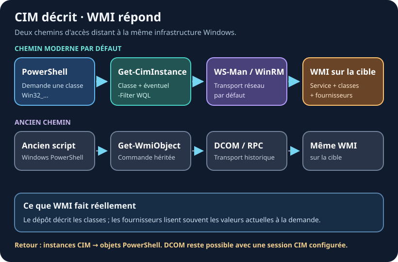
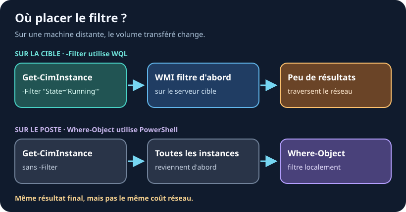

12. WMI et CIM
Ressources du chapitre - Exercices pratiques - Mémo des commandes
Get-Process et Get-Service couvrent les processus et les
services. Mais pour la RAM installée, le numéro de série du BIOS, l'espace disque ou
la configuration réseau, il n'existe pas de cmdlet dédiée.
Ces informations viennent de WMI — l'inventaire interne de Windows. On l'interroge avec les cmdlets CIM.
WMI, CIM : de quoi parle-t-on ?
- WMI (Windows Management Instrumentation) est l'infrastructure de gestion de Windows : elle décrit les classes dans un dépôt et demande souvent les valeurs actuelles à des fournisseurs de données au moment où vous les interrogez.
- CIM (Common Information Model) est le standard qui décrit comment ranger et interroger ces informations. C'est une norme ouverte, pas une invention Microsoft.
Autrement dit : CIM donne le modèle commun ; WMI est la mise en œuvre de Windows qui répond à la requête. La cmdlet CIM est votre porte d'entrée depuis PowerShell.

Le chemin bleu est celui d'une requête distante par défaut. Une session CIM configurée explicitement peut aussi utiliser DCOM ; ce n'est pas le chemin recommandé pour un nouveau script.
Une seule cmdlet à retenir
Get-CimInstance <NomDeClasse>
Une classe = une catégorie d'information. Leur nom commence presque
toujours par Win32_.
# Le système d'exploitation
Get-CimInstance Win32_OperatingSystem
# Le ou les processeurs
Get-CimInstance Win32_Processor
# Les disques
Get-CimInstance Win32_LogicalDisk
Les classes utiles au quotidien
| Classe | Ce qu'elle contient |
|---|---|
Win32_OperatingSystem |
Version de Windows, RAM totale et libre, date de démarrage |
Win32_ComputerSystem |
Nom de la machine, fabricant, modèle, domaine |
Win32_Processor |
Modèle du CPU, nombre de cœurs, charge instantanée |
Win32_LogicalDisk |
Lettres de lecteur, taille, espace libre |
Win32_BIOS |
Numéro de série, version du BIOS |
Win32_NetworkAdapterConfiguration |
IP, masque, passerelle, DNS |
Win32_Service |
Services, avec leur compte de démarrage et leur chemin |
Win32_UserAccount |
Comptes locaux |
Le résultat est un objet comme les autres
C'est tout l'intérêt : ce qui sort de Get-CimInstance se manipule avec
tout ce que vous savez déjà — Select-Object, Where-Object,
le pipeline.
$os = Get-CimInstance Win32_OperatingSystem
$os.Caption # Microsoft Windows 11 Professionnel
$os.TotalVisibleMemorySize # RAM totale, en Ko
$os.FreePhysicalMemory # RAM libre, en Ko
Attention aux unités
Win32_OperatingSystemexprime la mémoire en kilooctets, alors queWin32_LogicalDiskexprime les tailles en octets. Les diviseurs ne sont donc pas les mêmes :```powershell $os = Get-CimInstance Win32_OperatingSystem
$d = Get-CimInstance Win32_LogicalDisk -Filter "DeviceID='C:'"
```
Le réflexe : vérifiez toujours l'unité avec
Get-CimInstance <classe> | Format-List *avant de faire un calcul.
Filtrer : côté serveur, pas côté client
Get-CimInstance accepte -Filter, qui filtre
avant de renvoyer les données.
# Seulement les disques durs locaux (DriveType 3)
Get-CimInstance Win32_LogicalDisk -Filter "DriveType=3"
# Seulement les services démarrés
Get-CimInstance Win32_Service -Filter "State='Running'"
C'est plus efficace que | Where-Object : on ne transporte que ce dont
on a besoin. La différence est invisible en local, mais très nette sur une machine
distante.

Avec -Filter, la cible applique la condition avant le retour réseau.
Avec Where-Object, PowerShell reçoit d'abord les instances, puis les
trie localement.
La syntaxe de
-Filtern'est pas du PowerShell C'est du WQL, un mini-langage proche du SQL. Il a ses propres règles :=et non-eq, les valeurs texte entre guillemets simples, et pas de$_.
powershell -Filter "DriveType=3" # nombre : sans guillemets -Filter "State='Running'" # texte : guillemets simples -Filter "DriveType=3 AND FreeSpace < 10000000000" # AND / OR, pas -andVous retrouverez exactement le même piège au chapitre 31 avec le
-Filterd'Active Directory.
Explorer quand on ne sait pas
Deux questions reviennent toujours : quelle classe ? et quelles propriétés ?
# Quelles classes parlent de disque ?
Get-CimClass -ClassName Win32_*Disk*
# Quelles propriétés a cette classe, sans même l'interroger ?
(Get-CimClass Win32_LogicalDisk).CimClassProperties.Name
# Tout voir sur une instance réelle
Get-CimInstance Win32_BIOS | Format-List *
C'est le même réflexe qu'au chapitre 03 avec Get-Member : on inspecte
avant d'utiliser.
Exemple complet : une fiche machine
$os = Get-CimInstance Win32_OperatingSystem
$cs = Get-CimInstance Win32_ComputerSystem
$cpu = Get-CimInstance Win32_Processor | Select-Object -First 1
[PSCustomObject]@{
Machine = $cs.Name
Systeme = $os.Caption
Processeur = $cpu.Name
Coeurs = $cpu.NumberOfCores
RAM_Go = [math]::Round($os.TotalVisibleMemorySize / 1MB, 1)
RAM_Libre = [math]::Round($os.FreePhysicalMemory / 1MB, 1)
Demarre_Le = $os.LastBootUpTime
}
Interroger une machine distante
C'est là que CIM devient un outil d'administration.
# Une machine
Get-CimInstance Win32_OperatingSystem -ComputerName "SRV-01"
# Plusieurs machines d'un coup
Get-CimInstance Win32_LogicalDisk -Filter "DriveType=3" -ComputerName "SRV-01", "SRV-02"
Si vous interrogez les mêmes serveurs plusieurs fois, ouvrez une session : la connexion est négociée une seule fois.
$session = New-CimSession -ComputerName "SRV-01", "SRV-02"
Get-CimInstance Win32_OperatingSystem -CimSession $session
Get-CimInstance Win32_Service -Filter "State='Stopped'" -CimSession $session
Remove-CimSession -CimSession $session
Prérequis réseau L'accès distant CIM passe par WinRM (port 5985), à activer sur la cible avec
Enable-PSRemoting -Force. L'ancien WMI utilisait DCOM, beaucoup plus pénible à faire passer dans un pare-feu — c'est l'une des raisons du passage à CIM.
Et Get-WmiObject ?
Vous le croiserez dans quantité de scripts et de tutoriels. C'est l'ancienne famille de cmdlets, dépréciée depuis PowerShell 3.0 (2012) au profit des cmdlets CIM.
| Ancien (à ne plus écrire) | Moderne |
|---|---|
Get-WmiObject |
Get-CimInstance |
Invoke-WmiMethod |
Invoke-CimMethod |
Remove-WmiObject |
Remove-CimInstance |
Pourquoi CIM est meilleur : il utilise WinRM au lieu de DCOM, respecte un standard ouvert, et gère proprement les sessions réutilisables.
Ce que vous verrez vraiment sur votre poste
Get-WmiObjecta été retiré de PowerShell 6 et des premières versions 7. Dans PowerShell 7.6 il est de nouveau présent, sous forme de fonction de compatibilité :```powershell Get-Command Get-WmiObject | Select-Object Name, CommandType, Source
Get-WmiObject Function Microsoft.PowerShell.Management
```
Notez
Functionet nonCmdlet: c'est un vestige de compatibilité, pas un retour en grâce. Ne l'utilisez pas dans du code neuf — sa présence n'est garantie sur aucune version.
Appeler une méthode
Les classes CIM n'exposent pas que des propriétés : elles ont aussi des méthodes.
# Quelles méthodes offre cette classe ?
(Get-CimClass Win32_Process).CimClassMethods.Name
# Create, Terminate, GetOwner, SetPriority...
# Qui a lancé ce processus ?
Get-CimInstance Win32_Process -Filter "Name='notepad.exe'" | Invoke-CimMethod -MethodName GetOwner
En pratique on préfère les cmdlets natives quand elles existent (Stop-Process
plutôt que Terminate) : elles sont plus lisibles et gèrent
-WhatIf.
À retenir
- ✅ WMI est l'inventaire de Windows, CIM est la façon standard de l'interroger
-
✅
Get-CimInstance <Classe>: une seule cmdlet pour tout le matériel et le système - ✅ Les noms de classes commencent par
Win32_ -
✅
-Filterutilise du WQL (=, guillemets simples,AND), pas de la syntaxe PowerShell -
✅
Get-CimClasspour découvrir classes et propriétés avant de les utiliser - ✅ Attention aux unités : Ko pour la RAM, octets pour les disques
-
✅
-ComputerName/New-CimSessionpour interroger des machines distantes -
✅
Get-CimInstanceremplaceGet-WmiObject: n'écrivez plus de*-WmiObject
Liens - Get-CimInstance - Classes WMI Win32